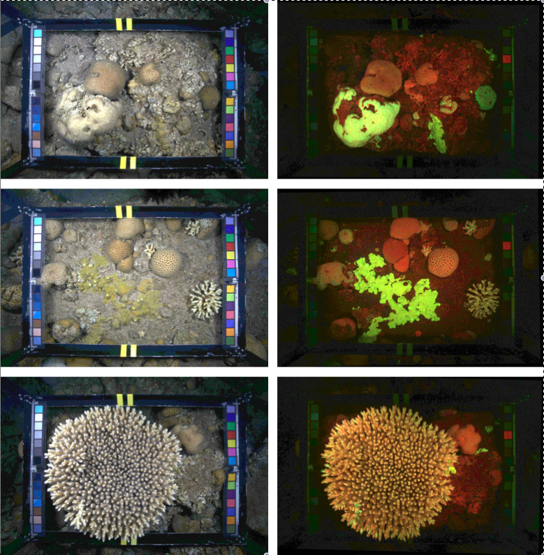

Eilat Fluorescence Corals is a data-set of co-registered reflectance and fluorescence coral reef survey image-pairs captured during nighttime in the shallow reefs adjacent to the Interuniversity Institute for Marine Sciencses in Eilat. Each image is annotated with 200 point annotations using label-set of 10 classes.
Co-located image-pairs were captured during nighttime in the shallow reefs adjacent to the Interuniversity Institute for Marine Sciencses in Eilat. Image locations were chosen randomly along a 3-15 m depth gradient. At each location, reflectance and fluorescence images were taken, each covering 50 x 70cm of the benthos. Using this methodology, 212 image-pairs were collected during three dives, each approximately one hour long.
For both reflectance and fluorescence imaging, the camera system comprised a Canon 5D Mark II professional grade off-the-shelf camera with a Sigma 20mm wide-angle lens, and a Sea&Sea underwater housing with the Fisheye Dome Port 240, fitted with a 40mm extension ring for better alignment of the dome port with the lens to reduce distortions. For fluorescence imaging, the Fluorescence Imaging System was utilized. Each image-pair is annotated with 200 point annotations pertaining to one of 10 classes in the label-set, for a total of 42,400 annotations. Sample patches from each class are shown here. Please refer to the original publication for all details.
This data-set can be downloaded from Dryad data repository, doi:10.5061/dryad.t4362. We kindly ask that you cite this paper in any results utilizing this data.
{kind=link}